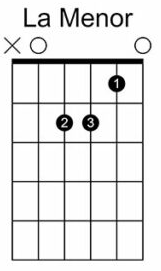

Lliçó 2.2
Aprèn: LA Menor (Am)
Benvingut de nou a una altra lliçó de guitarra!
Avui continuarem ampliant el nostre repertori d'acords amb un dels acords menors més utilitzats i bonics: l'acord de LA Menor, o Am. Recordareu que en la lliçó anterior vam aprendre com tocar l'acord de MI Menor (Em). L'acord de LA Menor té una sonoritat similarment melancòlica i és igual de senzill d'aprendre.
Què Necessites:
- Una guitarra afinada.
- Les teves mans.
- Ganes d'aprendre.
Pas 1: Col·locació de la Guitarra
Assegura't que estàs assegut còmodament amb la guitarra ben reposada a la teva falda. El mànec de la guitarra ha d'estar accessible sense que hagis d'estirar massa el braç.
Pas 2: Els Dits i les Cordes
L'acord de LA Menor és molt similar al de MI Menor, però amb una lleugera variació en la posició dels dits:
Dit 1 (índex): Col·loca aquest dit al primer trast de la corda B (segona corda).
Dit 2 (dit mig): Aquest dit va al segon trast de la corda D (quarta corda), igual com en Em.
Dit 3 (dit anular): Col·loca aquest dit al segon trast de la corda G (tercera corda).
Pas 3: Com Prémer les Cordes
Com en l'anterior acord que has aprés, assegura't que els teus dits estan ben col·locats i no obstrueixen altres cordes. Prem fermament per evitar brunzits i assegura't que cada corda pugui resonar lliurement quan la toques. Amb els dits en posició, rasca totes les cordes des de la cinquena corda (A) fins a la primera (E). Les cordes han de sonar netes i clares, formant un so agradable i melancòlic que és característic dels acords menors.
Pas 4: Integració en la Pràctica
Una bona manera de practicar el LA Menor és alternar-lo amb l'acord de MI Menor que ja coneixeu. Això no només ajuda a memoritzar les posicions dels dits, sinó que també millora la vostra habilitat per canviar ràpidament entre acords, una habilitat crucial per tocar cançons.
Felicitats per haver afegit un altre acord al vostre repertori! L'acord de LA Menor és fonamental en moltes cançons i estils musicals. Recordeu que la pràctica constant és essencial per aprofundir la vostra comprensió i habilitat amb la guitarra. Continueu practicant, i no dubteu a revisar aquesta i altres lliçons quantes vegades necessiteu.